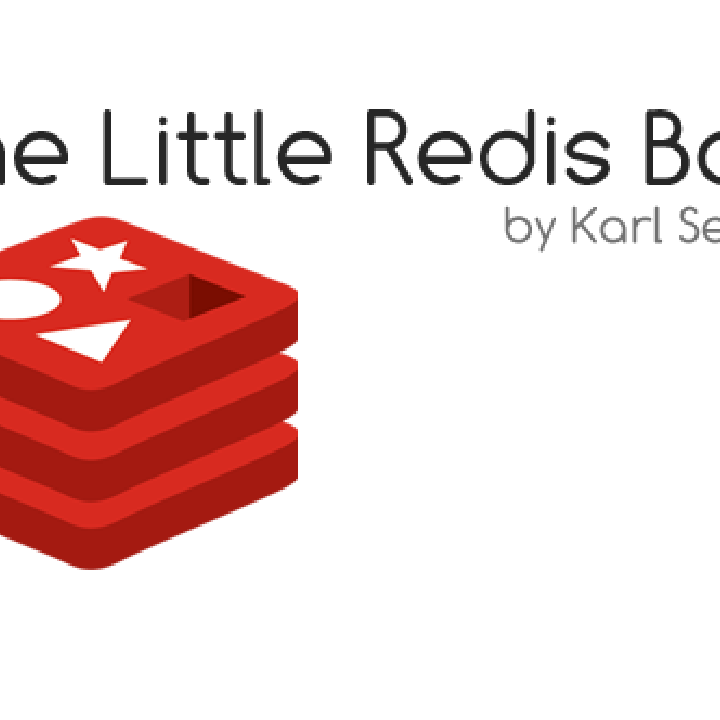

Về cuốn sách này
Giấy phép
Cuốn sách Redis nhỏ được cấp phép theo Attribution-NonCommercial 3.0 Unported. Bạn không nên phải trả tiền cho cuốn sách này.
Bạn được tự do sao chép, phân phối, chỉnh sửa hoặc hiển thị cuốn sách. Tuy nhiên, tôi yêu cầu bạn luôn ghi công cuốn sách cho tôi, Karl Seguin, và không dùng cho mục đích thương mại.
Bạn có thể xem toàn văn giấy phép tại:
http://creativecommons.org/licenses/by-nc/3.0/legalcode
Về tác giả
Karl Seguin là lập trình viên với kinh nghiệm trên nhiều lĩnh vực và công nghệ. Ông đóng góp tích cực cho các dự án phần mềm mã nguồn mở, viết kỹ thuật và thỉnh thoảng diễn thuyết. Ông đã viết nhiều bài và vài công cụ về Redis. Redis cung cấp xếp hạng và thống kê cho dịch vụ miễn phí dành cho nhà phát triển game casual của ông: mogade.com.
Karl cũng viết The Little MongoDB Book, cuốn sách miễn phí và phổ biến về MongoDB.
Blog của ông tại http://openmymind.net và Twitter @karlseguin
Lời cảm ơn
Đặc biệt cảm ơn Perry Neal đã cho tôi mượn đôi mắt, tư duy và đam mê của anh. Bạn đã giúp tôi vô cùng quý giá. Cảm ơn bạn.
Phiên bản mới nhất
Mã nguồn mới nhất của cuốn sách tại: http://github.com/karlseguin/the-little-redis-book
1
Giới thiệu
Vài năm qua, kỹ thuật và công cụ lưu trữ, truy vấn dữ liệu phát triển với tốc độ đáng kinh ngạc. Có thể nói cơ sở dữ liệu quan hệ không biến mất, nhưng hệ sinh thái quanh dữ liệu sẽ không còn như trước.
Trong các công cụ và giải pháp mới, với tôi Redis là thú vị nhất. Vì sao? Thứ nhất, học Redis cực kỳ dễ — đơn vị thời gian phù hợp là vài giờ để làm quen. Thứ hai, nó giải quyết một tập vấn đề cụ thể nhưng vẫn khá tổng quát. Redis không cố làm mọi thứ cho mọi loại dữ liệu. Khi hiểu Redis hơn, bạn sẽ rõ điều gì nên và không nên đặt vào đó — và khi phù hợp, trải nghiệm lập trình rất tuyệt.
Bạn có thể xây hệ thống hoàn chỉnh chỉ với Redis, nhưng đa số sẽ dùng Redis bổ sung cho giải pháp dữ liệu tổng quát hơn — CSDL quan hệ, hướng tài liệu, v.v. Nó giống công cụ lập chỉ mục: bạn không xây cả ứng dụng trên Lucene, nhưng khi cần tìm kiếm tốt thì trải nghiệm tốt hơn nhiều. Tất nhiên, tương đồng với công cụ lập chỉ mục chỉ đến đó.
Mục tiêu cuốn sách là xây nền tảng để thành thạo Redis: năm cấu trúc dữ liệu, các cách mô hình hóa dữ liệu, cùng chi tiết quản trị và kỹ thuật gỡ lỗi.
2
Bắt đầu
Mỗi người học khác nhau: thực hành, xem video, hoặc đọc. Không gì giúp hiểu Redis bằng trải nghiệm thực tế. Redis dễ cài và có shell đơn giản. Hãy mất vài phút cài và chạy trên máy.
Trên Windows
Redis không hỗ trợ Windows chính thức, nhưng vẫn có lựa chọn — không dùng production, nhưng phát triển thì ổn.
Bản port của Microsoft Open Technologies tại https://github.com/MSOpenTech/redis. Tại thời điểm viết, giải pháp chưa sẵn sàng cho production.
Giải pháp khác tại https://github.com/dmajkic/redis/downloads. Tải phiên bản mới nhất, giải nén và mở thư mục 64bit hoặc 32bit tùy kiến trúc.
Trên *nix và MacOSX
Với *nix và Mac, build từ source là lựa chọn tốt. Hướng dẫn và số phiên bản mới nhất tại http://redis.io/download. Tại thời điểm viết là 2.6.2; cài bằng:
wget http://redis.googlecode.com/files/redis-2.6.2.tar.gz
tar xzf redis-2.6.2.tar.gz
cd redis-2.6.2
make3
(Hoặc cài qua package manager — ví dụ MacOSX với Homebrew: brew install redis.)
Nếu build từ source, binary nằm trong thư mục src. Chạy cd src.
Chạy và kết nối Redis
Redis có vài executable. Ta tập trung server và CLI (client kiểu DOS). Khởi động server: Windows double-click redis-server; *nix/Mac chạy ./redis-server.
Thông báo khởi động có thể cảnh báo không tìm thấy redis.conf — Redis dùng mặc định, đủ cho bài học này.
Mở console: double-click redis-cli (Windows) hoặc ./redis-cli (*nix/Mac), kết nối server local cổng 6379.
Kiểm tra bằng lệnh info — sẽ thấy nhiều cặp key-value về trạng thái server.
Gặp sự cố, hãy nhờ nhóm hỗ trợ Redis chính thức.
4
Redis Drivers
API Redis là tập hàm rõ ràng, đơn giản, mang tính thủ tục. Dù CLI hay driver ngôn ngữ yêu thích, cách làm tương tự. Bạn có thể theo dõi từ ngôn ngữ lập trình. Tải driver phù hợp tại trang client nếu cần.
5
Chương 1 - Cơ bản
Điều gì làm Redis đặc biệt? Giải quyết loại vấn đề nào? Lập trình viên cần lưu ý gì? Trước hết cần hiểu Redis là gì.
Redis thường được mô tả là kho key-value trong bộ nhớ, bền vững. Mô tả đó chưa đủ: Redis giữ dữ liệu trong RAM và ghi ra đĩa, nhưng hơn nhiều so với key-value đơn giản. Bỏ qua hiểu lầm này kẻo góc nhìn về Redis và vấn đề nó giải quyết quá hẹp.
Thực tế Redis lộ ra năm cấu trúc dữ liệu, chỉ một cái giống key-value điển hình. Hiểu năm cấu trúc, cách hoạt động, phương thức và mô hình hóa là chìa khóa. Trước tiên, hãy nghĩ «lộ cấu trúc dữ liệu» nghĩa là gì.
Trong thế giới quan hệ, CSDL lộ một cấu trúc — bảng. Bảng linh hoạt nhưng không phải mọi thứ đều đơn giản hoặc nhanh. Nếu dùng cấu trúc chuyên biệt hơn, có thể đánh đổi tính tổng quát lấy đơn giản và tốc độ.
Dùng cấu trúc phù hợp từng bài toán — đúng cách ta code. Với scalar, list, hash, set, sao không lưu đúng kiểu đó? Kiểm tra tồn tại sao phải phức tạp hơn exists(key) hoặc chậm hơn O(1)?
6
Các khối xây dựng
Cơ sở dữ liệu
Redis có khái niệm database quen thuộc: nhóm dữ liệu ứng dụng, tách khỏi ứng dụng khác.
Database trong Redis được đánh số; mặc định là 0. Đổi database bằng select: gõ select 1, prompt đổi thành redis 127.0.0.1:6379[1]>. Về mặc định: select 0.
Lệnh, Key và Value
Dù Redis hơn key-value store, lõi của năm cấu trúc đều có key và value. Cần hiểu key/value trước khi đi tiếp.
Key định danh dữ liệu — ví dụ users:leto. Dấu hai chấm không có ý nghĩa đặc biệt với Redis; người dùng hay dùng làm separator.
Value là dữ liệu gắn key — chuỗi, số, object serialize (JSON, XML…). Redis coi value là byte array. Driver serialize khác nhau; sách này chỉ nói string, integer và JSON.
Thử lệnh sau:
set users:leto "{name: leto, planet: dune, likes: [spice]}"Giải phẫu lệnh Redis: lệnh set, rồi tham số — key và value. Nhiều lệnh nhận key làm tham số đầu. Lấy lại value?
get users:letoThử thêm user, key/value khác. get và set là cách đơn giản nhất làm quen key/value.
7
Truy vấn
Hai điều sẽ rõ dần: với Redis, key là tất cả, value gần như không quan trọng — Redis không cho truy vấn theo nội dung value. Vì vậy không tìm user sống trên hành tinh dune được.
Nhiều người lo ngại: thế giới truy vấn linh hoạt khiến Redis có vẻ thô sơ. Đừng quá bận tâm — Redis không phải giải pháp vạn năng. Có thể bạn sẽ tìm cách mô hình hóa mới.
Hiểu thực tế này giúp giải thích vì sao value có thể là bất cứ gì — Redis không cần đọc/hiểu chúng — và giúp tư duy mô hình hóa trong thế giới mới.
Bộ nhớ và bền vững
Redis lưu trong RAM và bền vững. Mặc định snapshot ra đĩa theo số key thay đổi: cấu hình X key đổi thì lưu mỗi Y giây — từ 60 giây (≥1000 key) đến 15 phút (≤9 key).
Hoặc (thêm) chế độ append: mỗi thay đổi key cập nhật file append-only. Có thể chấp nhận mất ~60 giây dữ liệu đổi lấy hiệu năng; Redis cho bạn chọn. Chương 6 sẽ nói tùy chọn thứ ba: offload persistence sang slave.
Redis giữ mọi dữ liệu trong RAM — chi phí chủ yếu là RAM trên server.
Toàn tác phẩm Shakespeare ~5,5MB. Giải pháp khác thường IO- hoặc CPU-bound. Trừ file đa phương tiện lớn, in-memory thường không phải vấn đề; nếu có, bạn đổi IO-bound sang memory-bound.
Redis từng có virtual memory nhưng bị coi là thất bại và đã deprecated.
(Shakespeare nén còn ~2MB. Redis không tự nén; bạn có thể tự nén/giải nén đổi lấy RAM.)
8
Kết hợp lại
Trước khi đi sâu Redis, hãy gắn hạn chế truy vấn, cấu trúc dữ liệu và lưu trong RAM.
Ba yếu tố đó tạo ra tốc độ. «Mọi thứ trong RAM» chỉ là một phần — lý do Redis nổi bật là cấu trúc dữ liệu chuyên biệt.
Nhanh đến mức nào tùy lệnh và dữ liệu — thường hàng chục/hàng trăm nghìn ops/giây. Chạy redis-benchmark (cùng thư mục redis-server, redis-cli) để thử.
Tôi từng đổi mô hình quan hệ sang Redis: load test 5+ phút → ~150ms. Không phải lúc nào cũng được mức đó, nhưng cho bạn hình dung.
Lập trình viên SQL hay giảm round trip — lời khuyên tốt cho Redis. Nhưng đôi khi cần nhiều lần gọi server; ban đầu có vẻ lạ nhưng chi phí nhỏ so với hiệu năng thu được.
Tóm tắt chương
Chưa thực hành nhiều nhưng đã phủ nhiều chủ đề. Chương sau thực hành sẽ làm rõ hơn. Điểm chính:
- Key là chuỗi định danh value
- Value là byte array tùy ý — Redis không quan tâm nội dung
- Redis lộ (và cài đặt) năm cấu trúc dữ liệu chuyên biệt
- Kết hợp trên giúp Redis nhanh, dễ dùng, nhưng không phù hợp mọi kịch bản
9
Chương 2 - Cấu trúc dữ liệu
Năm cấu trúc dữ liệu của Redis: mỗi cái là gì, phương thức nào, dùng cho tính năng/dữ liệu gì.
Trước giờ chỉ thấy lệnh, key, value. Khi set, Redis biết dùng cấu trúc nào? Mỗi lệnh gắn một cấu trúc — set → string, hset → hash. Từ vựng Redis nhỏ, dễ nắm.
Trang web Redis có tài liệu tham khảo tuyệt vời. Không lặp lại — ta chỉ nói lệnh quan trọng nhất cho từng cấu trúc.
Quan trọng nhất: thử và vui vẻ. flushdb xóa sạch DB — đừng ngại thử linh tinh!
Strings
String là cấu trúc cơ bản nhất — key-value. Tên gây nhầm; value có thể là gì cũng được. Tôi thích gọi «scalar».
Dùng string lưu object theo key — bạn sẽ dùng nhiều:
set users:leto "{name: leto, planet: dune, likes: [spice]}"Redis có thao tác chuỗi: strlen <key>, getrange, append. Thử và xem kết quả:
> strlen users:leto
(integer) 42
> getrange users:leto 27 40
"likes: [spice]"
> append users:leto " OVER 9000!!"
(integer) 54Có thể thắc mắc: kéo range từ JSON hay append không «có nghĩa». Đúng — một số lệnh string chỉ hợp kiểu dữ liệu nhất định.
Redis thường không quan tâm value, nhưng vài lệnh string gắn cấu trúc value. Ví dụ mơ hồ: append và
10
getrange hữu ích trong serialization tiết kiệm không gian. Ví dụ cụ thể: incr, incrby, decr, decrby:
> incr stats:page:about
(integer) 1
> incr stats:page:about
(integer) 2
> incrby ratings:video:12333 5
(integer) 5
> incrby ratings:video:12333 3
(integer) 8String Redis rất hợp analytics. Thử incr users:leto (không phải số) — sẽ lỗi.
setbit/getbit: bài Spool đếm unique visitor trong ngày — 128 triệu user, laptop <50ms, 16MB RAM.
Không cần hiểu bitmap — chỉ cần biết string mạnh hơn vẻ ngoài. Hay dùng: object và counter; cache vì get theo key rất nhanh.
Hashes
Hash cho thấy Redis không chỉ key-value: giống string nhưng có thêm field. Tương đương set/get:
hset users:goku powerlevel 9000
hget users:goku powerlevelĐặt/lấy/xóa nhiều field:
hmset users:goku race saiyan age 737
hmget users:goku race powerlevel
hgetall users:goku
hkeys users:goku
hdel users:goku ageHash kiểm soát tốt hơn string thuần — cập nhật/xóa từng phần không cần đọc/ghi cả object.
11
Nhìn hash qua object có cấu trúc (user) là chìa khóa. Chương sau: hash tổ chức dữ liệu, truy vấn thực tế hơn — đó là điểm hash tỏa sáng.
Lists
List lưu và thao tác mảng value theo key — thêm, lấy đầu/cuối, index. Ví dụ list newusers:
lpush newusers goku
ltrim newusers 0 50Push user mới rồi ltrim giữ 50 user — pattern phổ biến. ltrim O(N) phần tử bị xóa; trim sau mỗi insert → O(1).
Lần đầu value một key tham chiếu key khác. Lấy 10 user mới nhất:
keys = redis.lrange('newusers', 0, 10)
redis.mget(*keys.map {|u| "users:#{u}"})Ví dụ Ruby — nhiều round trip như đã nói.
List còn dùng cho log, đường đi user trên site, hàng đợi hành động trong game.
Sets
Set lưu giá trị duy nhất, phép toán tập hợp. Ví dụ danh sách bạn:
sadd friends:leto ghanima paul chani jessica
sadd friends:duncan paul jessica aliaKiểm tra bạn O(1):
sismember friends:leto jessica
sismember friends:leto vladimirXem bạn chung:
sinter friends:leto friends:duncan12
và lưu kết quả vào key mới:
sinterstore friends:leto_duncan friends:leto friends:duncanSet hợp gắn thẻ, thuộc tính không trùng, hoặc giao/hợp tập.
Sorted Sets
Sorted set mạnh nhất — như set nhưng có score để xếp hạng. Ví dụ xếp hạng bạn:
zadd friends:duncan 70 ghanima 95 paul 95 chani 75 jessica 1 vladimirBao nhiêu bạn của duncan có score ≥ 90?
zcount friends:duncan 90 100Thứ hạng của chani?
zrevrank friends:duncan chaniDùng zrevrank thay zrank vì mặc định tăng dần, ta xếp cao→thấp. Hay dùng cho leaderboard; mọi thứ xếp theo số nguyên và thao tác theo score.
Tóm tắt chương
Tổng quan năm cấu trúc. Redis thường làm được hơn bạn nghĩ. Hiểu use-case thông thường là đủ; không cần dùng hết — nhiều feature chỉ vài lệnh.
13
Chương 3 - Tận dụng cấu trúc dữ liệu
Chủ đề nâng cao nhưng thường gặp và pattern thiết kế.
Ký hiệu Big O
Big O (O(n), O(1)…) mô tả hành vi theo số phần tử — trong Redis: lệnh nhanh thế nào theo số item.
Tài liệu Redis ghi Big O và yếu tố ảnh hưởng hiệu năng.
Nhanh nhất O(1) — sismember ví dụ. Nhiều lệnh Redis là O(1).
O(log(N)): zadd, N = số phần tử trong set.
O(N): ví dụ ltrim — N là số phần tử bị xóa, không phải độ dài list.
zremrangebyscore: O(log(N)+M), M phần tử bị xóa thường quan trọng hơn N.
sort: O(N+M*log(M)) — một trong các lệnh phức tạp nhất.
O(N²), O(C^N): Redis không có lệnh loại này.
Big O là worst case — có thể tìm ngay hoặc phải đến phần tử cuối.
14
Truy vấn đa key giả
Cần truy cùng value bằng key khác nhau — email lúc đăng nhập, id sau đăng nhập. Cách tệ: nhân đôi object:
set users:leto@dune.gov "{id: 9001, email: 'leto@dune.gov', ...}"
set users:9001 "{id: 9001, email: 'leto@dune.gov', ...}"Khó quản lý và tốn gấp đôi RAM.
Redis không link key với key — triết lý API gọn. Giải pháp: hash.
Dùng hash bỏ nhân đôi:
set users:9001 "{id: 9001, email: leto@dune.gov, ...}"
hset users:lookup:email leto@dune.gov 9001Field làm chỉ mục phụ, trỏ một user object. Lấy theo id:
get users:9001Theo email: hget rồi get (Ruby):
id = redis.hget('users:lookup:email', 'leto@dune.gov')
user = redis.get("users:#{id}")Pattern hay dùng — hash tỏa sáng ở đây.
Tham chiếu và chỉ mục
Phải tự quản lý index/tham chiếu — hơi phiền khi update/delete.
Set thường làm index thủ công:
sadd friends:leto ghanima paul chani jessicaMỗi member trỏ string user. Nếu chani đổi tên/xóa tài khoản — có thể theo quan hệ ngược:
15
sadd friends_of:chani leto paulChi phí bảo trì aside, index thêm tốn RAM/CPU. Phần sau: giảm round trip (chương 1).
CSDL quan hệ cũng tốn index — khác là được abstraction che đi.
Tham chiếu thủ công trong Redis đáng tiếc nhưng thử thực tế thường không phải vấn đề.
Round trip và Pipelining
Gọi server thường xuyên là pattern Redis — xem cách tối ưu.
Nhiều lệnh nhận nhiều tham số — mget:
keys = redis.lrange('newusers', 0, 10)
redis.mget(*keys.map {|u| "users:#{u}"})sadd thêm nhiều member:
sadd friends:vladimir piter
sadd friends:paul jessica leto "leto II" chaniPipelining: gửi nhiều lệnh không chờ từng reply — giảm overhead mạng.
Batch hợp lý — Redis queue lệnh trong RAM. Key ~50 ký tự có thể batch hàng nghìn/chục nghìn.
Ruby: block pipelined:
redis.pipelined do
9001.times do
redis.incr('powerlevel')
end
endPipelining tăng tốc import hàng loạt!
16
Giao dịch (Transactions)
Mọi lệnh Redis atomic, kể cả lệnh làm nhiều việc. Redis hỗ trợ transaction nhiều lệnh.
Redis single-threaded — một lệnh chạy thì lệnh khác không xen. Ví dụ:
incr≈ get + setgetsetset mới và trả giá trị cũsetnxset chỉ khi key chưa tồn tại
Nhóm lệnh atomic: multi → các lệnh → exec hoặc discard.
Redis đảm bảo:
- Thực thi đúng thứ tự
- Một khối atomic — không lệnh client khác chen giữa
- Tất cả hoặc không lệnh nào trong transaction
Kết hợp pipelining và transaction được.
multi
hincrby groups:1percent balance -9000000000
hincrby groups:99percent balance 9000000000
execRedis cho watch key — transaction có điều kiện. Không thể incr tùy biến kiểu:
redis.multi()
current = redis.get('powerlevel')
redis.set('powerlevel', current + 1)
redis.exec()Không hoạt động như vậy. Với watch powerlevel:
redis.watch('powerlevel')
current = redis.get('powerlevel')
redis.multi()17
redis.set('powerlevel', current + 1)
redis.exec()Client khác đổi powerlevel sau watch → transaction fail. Không đổi → set OK. Lặp đến khi thành công.
Anti-pattern: lệnh keys
keys khớp pattern — không dùng production: quét tuyến tính mọi key, chậm.
Ví dụ bug tracker: key bug:account_id:bug_id. Liệt kê bug account — đừng keys bug:1233:*.
keys bug:1233:*Dùng hash:
hset bugs:1233 1 "{id:1, account: 1233, subject: '...'}"
hset bugs:1233 2 "{id:2, account: 1233, subject: '...'}"hkeys bugs:1233 lấy id; hdel bugs:1233 2 xóa bug; del bugs:1233 xóa account.
Tóm tắt chương
Hai chương trước + chương này — insight dùng Redis cho feature thật. Hiểu cấu trúc cơ bản là then chốt.
18
Chương 4 - Vượt ra ngoài cấu trúc dữ liệu
Ngoài năm cấu trúc còn lệnh khác — info, select, flushdb, multi, exec, discard, watch, keys…
Hết hạn (Expiration)
Đánh dấu key hết hạn — Unix timestamp hoặc TTL giây. Theo key, không phụ thuộc cấu trúc.
expire pages:about 30
expireat pages:about 1356933600Lệnh đầu xóa sau 30 giây; lệnh hai lúc 00:00 31/12/2012.
Cache lý tưởng. ttl, persist:
ttl pages:about
persist pages:aboutsetex — set string + TTL một lệnh:
setex pages:about 30 '<h1>about us</h1>....'Publish / Subscribe
blpop/brpop — hàng đợi đơn giản. Redis hỗ trợ pub/sub native.
Mở redis-cli thứ hai. Cửa sổ 1: subscribe warnings
subscribe warningsCửa sổ 2 publish:
publish warnings "it's over 9000!"Cửa sổ 1 nhận message.
19
subscribe channel1 channel2, psubscribe warnings:*, unsubscribe, punsubscribe.
publish trả số client nhận (ví dụ 1).
Monitor và Slow Log
monitor — debug, xem lệnh ứng dụng gửi. Cửa sổ 1 monitor, cửa sổ 2 get/set.
Không chạy monitor production — chỉ dev/debug.
Slowlog ghi lệnh chậm hơn ngưỡng micro giây. config set slowlog-log-slower-than 0 log mọi lệnh:
config set slowlog-log-slower-than 0Vài lệnh rồi:
slowlog get
slowlog get 10slowlog len — số mục. Mỗi mục: id, timestamp, thời gian µs, lệnh+tham số.
Slowlog trong RAM — production ổn. Mặc định 1024 mục.
Sort
sort — sắp xếp list/set/sorted set. Dạng đơn giản:
20
rpush users:leto:guesses 5 9 10 2 4 10 19 2
sort users:leto:guessesTrả value tăng dần. Ví dụ nâng cao:
sadd friends:ghanima leto paul chani jessica alia duncan
sort friends:ghanima limit 0 3 desc alphalimit phân trang, desc giảm dần, alpha theo từ điển.
Sức mạnh sort: sắp theo object tham chiếu. Bug tracker — set watch:leto:
sadd watch:leto 12339 1382 338 9338Thêm dữ liệu severity:
set severity:12339 3
set severity:1382 2
set severity:338 5
set severity:9338 4Sắp theo severity cao→thấp:
sort watch:leto by severity:* descRedis thay * trong pattern by.
Có thể dùng hash thay nhiều key top-level:
hset bug:12339 severity 3
hset bug:12339 priority 1
hset bug:12339 details "{id: 12339, ....}"
hset bug:1382 severity 2
hset bug:1382 priority 2
hset bug:1382 details "{id: 1382, ....}"
hset bug:338 severity 5
hset bug:338 priority 3
hset bug:338 details "{id: 338, ....}"21
hset bug:9338 severity 4
hset bug:9338 priority 2
hset bug:9338 details "{id: 9338, ....}"Tổ chức gọn; sort theo severity/priority; chỉ định field:
sort watch:leto by bug:*->priority get bug:*->detailsSubstitution + -> vào field hash; get lấy details.
Set lớn sort chậm — lưu kết quả:
sort watch:leto by bug:*->priority get bug:*->details store watch_by_priority:letoKết hợp store + expiration tiện cho cache.
Tóm tắt chương
Lệnh không gắn cấu trúc — dùng tùy tình huống. Đọc xong sách nên xem full list lệnh.
22
Chương 5 - Lua Scripting
Redis 2.6 có Lua — truy vấn nâng cao trong Redis, giống stored procedure.
Khó nhất là học Lua — tương tự ngôn ngữ phổ biến, tài liệu tốt. Chương ví dụ ngắn.
Vì sao?
Stored procedure truyền thống nhiều người không thích — Redis Lua cũng vậy nếu lạm dụng.
Dùng đúng: gom lệnh + logic đơn giản → code gọn, nhanh hơn, atomic (bỏ watch cồng kềnh), ít round trip.
Ví dụ sau minh họa.
Eval
eval nhận script Lua, keys, args. Ví dụ Ruby (CLI multi-line khó):
script = <<-eos
local friend_names = redis.call('smembers', KEYS[1])
local friends = {}
for i = 1, #friend_names do
local friend_key = 'user:' .. friend_names[i]
local gender = redis.call('hget', friend_key, 'gender')
if gender == ARGV[1] then
table.insert(friends, redis.call('hget', friend_key, 'details'))
end
end
return friends
eos
Redis.new.eval(script, ['friends:leto'], ['m'])23
Lấy details bạn nam của Leto. Trong script: redis.call("command", ...).
Lua: {} table, #TABLE độ dài, .. nối chuỗi.
eval 4 tham số — tham số 2 là số key (Ruby driver tự thêm). CLI:
eval "....." "friends:leto" "m"
vs
eval "....." 1 "friends:leto" "m"Case 2 không mơ hồ key vs arg.
Phải liệt kê key trước cho Redis Cluster. Ví dụ đọc key động — chạy single instance/replication, chưa Cluster.
Quản lý script
script load → SHA1:
redis = Redis.new
script_key = redis.script(:load, "THE_SCRIPT")evalsha:
redis.evalsha(script_key, ['friends:leto'], ['m'])script kill, script flush, script exists.
Thư viện
Lua Redis: table.lib, string.lib, math.lib, cjson.lib — truyền nhiều arg có thể gói JSON:
24
script, truyền JSON gọn hơn:
redis.evalsha ".....", [KEY1], [JSON.fast_generate({gender: 'm', ghola: true})]Deserialize trong Lua:
local arguments = cjson.decode(ARGV[1])cjson parse value trong Redis — viết lại ví dụ trước:
local friend_names = redis.call('smembers', KEYS[1])
local friends = {}
for i = 1, #friend_names do
local friend_raw = redis.call('get', 'user:' .. friend_names[i])
local friend_parsed = cjson.decode(friend_raw)
if friend_parsed.gender == ARGV[1] then
table.insert(friends, friend_raw)
end
end
return friends(Chậm hơn — minh họa khả năng.)
Atomic
Single-threaded — script không bị ngắt; key có TTL không hết hạn giữa chừng nếu không xóa.
Quản trị
lua-time-limit giới hạn thời gian script — mặc định 5s, có thể hạ.
Tóm tắt chương
Lua scripting — lạm dụng được, dùng khôn ngoan thì đơn giản code và tăng hiệu năng. Ban đầu ít dùng, sau dùng nhiều hơn.
25
Chương 6 - Quản trị
Khía cạnh quản trị Redis — không đầy đủ, chỉ câu hỏi cơ bản người mới hay gặp.
Cấu hình
Thiếu redis.conf lúc khởi động — file cấu hình mỗi release có mẫu tại redis.conf. Thay 2.4.6 bằng phiên bản của bạn (info).
File tự mô tả — không lặp lại. config set từng giá trị; đã dùng slowlog-log-slower-than.
config get hỗ trợ pattern — mọi thứ liên quan log:
config get *log*Xác thực
requirepass — client auth password. Sau auth có thể flushall mọi DB.
Đổi tên lệnh để obfuscation:
rename-command CONFIG 5ec4db169f9d4dddacbfb0c26ea7e5ef
rename-command FLUSHALL 1041285018a942a4922cbf76623b741eHoặc tên rỗng để vô hiệu lệnh.
Giới hạn kích thước
Bao nhiêu key, field hash, phần tử list/set? Mỗi
26
instance, giới hạn thực tế là hàng trăm triệu.
Replication
Ghi master → slave cập nhật. slaveof trong config hoặc lệnh.
Bảo vệ dữ liệu + đọc từ slave (có thể hơi cũ).
Chưa failover tự động — master chết phải promote slave thủ công hoặc dùng HA tooling.
Backup
Copy snapshot — mặc định dump.rdb. scp/ftp/cp bất cứ lúc nào.
Hay tắt snapshot/aof trên master, để slave backup — giảm tải master.
Scale và Redis Cluster
Replication trước; lệnh nặng (sort) offload slave.
Scale thật: phân tán key nhiều instance (single-threaded). Driver có consistent hashing — ngoài phạm vi sách.
Redis Cluster đang phát triển — scale ngang, rebalance, failover tự động.
HA/scale hôm nay khả thi nếu bỏ công sức; Cluster sẽ dễ hơn.
27
Tóm tắt chương
Redis production-ready lâu rồi; tooling bảo mật/HA còn trẻ. Cluster sẽ giảm gánh quản lý.
28
Kết luận
Redis đơn giản hóa cách ta làm việc với dữ liệu — bỏ phần phức tạp của hệ khác. Nhiều trường hợp không phù hợp; đôi khi cảm giác «sinh ra cho data của bạn».
Redis dễ học — trong vài công nghệ mới, đây là khoản đầu tư học tập đáng giá cho bạn và team.
29